来源：https://eqc9f6vzuhv.feishu.cn/docx/Ifz1dXrkso0swUx5AY1cyBmUnGd
哈喽，圈友晚上好呀，感恩与你相遇呀。
这是咱的个人介绍，很高兴认识你：
【昵称】微微
【坐标】深圳
【职业】文员+自媒体写作副业
【擅长】写作技巧、知识管理、成长认知
【自我介绍】
1.写作12年，接触自媒体10个月的时间里，改稿子560+篇，原创文章300+篇，输出字数73W+。
2.生财有术知识星球龙珠碎片持有者，图书共读航海项目连续21篇日志加精选（且分别被邀请到两个大群分享），航海成绩并列个人组第一名。
3.多个优质付费知识星球精华帖创作者，半年累计100+篇精华帖。
4.近6年阅读336本书，写下49本笔记本。
5.自媒体写作半年变现五位数。
咱们都知道，在『生财有术』这个超一流的知识星球里，赚钱的项目数不胜数，甚至不需要用心去寻找，每天刷新出来的内容：
都能让我们找到多个赚钱的项目、或者发现案例中潜在的商机。
而对于暂时还没开窍、商业认知思维程度相对较浅的新人而言，大多数情况下是无法在短时间内找到适合自己的项目并进行实操的。
无论是能力还是思维，或是下场的勇气决心，都需要时间的沉淀，或者说：需要有已经获得过成功的正反馈力量（项目）去支持自己实践新方向的入场。
所以，面对犹豫不决、在海量知识面前始终无法下场起步的小伙伴，咱这里分享一个已经获得成绩，且非常、非常、非常适合新手小白的变现方式，不管是社恐还是自卑人士都适用：
瞄准各个付费星球的积分排行榜。
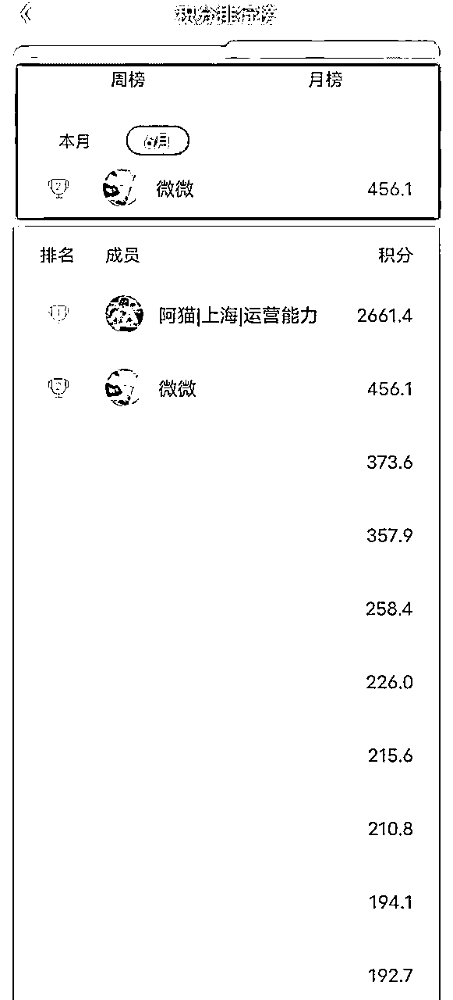
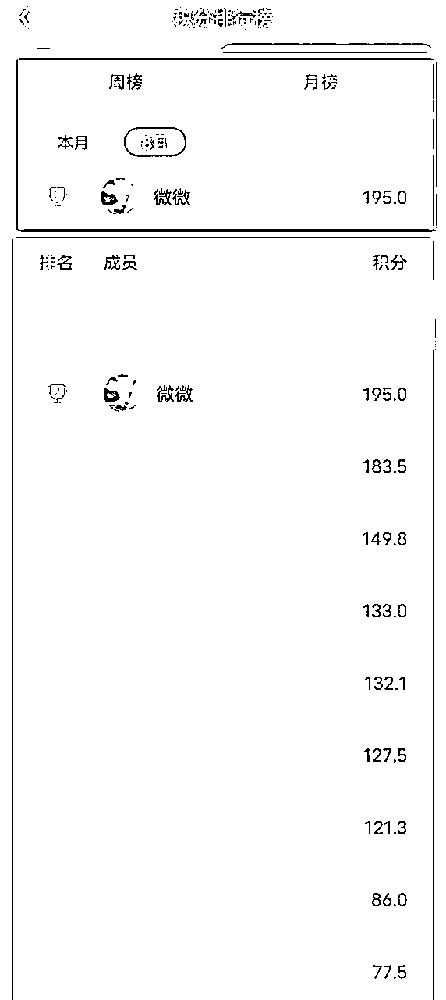
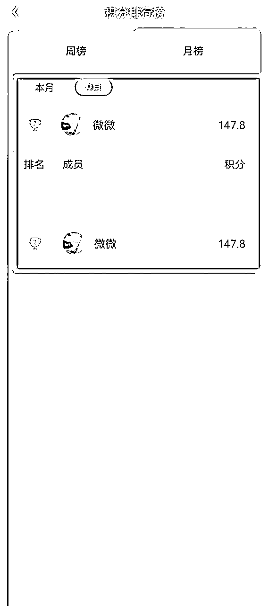
微微通过在各个付费知识星球的内容更新，做到了多个星球里月积分排行榜前排的成绩，从6月到9月，基本上都是位列前三甲的名次，也因此变现了8000+。
（而在9月的航海中，也成功挤进了生财有术知识星球月积分排行榜的前100名）
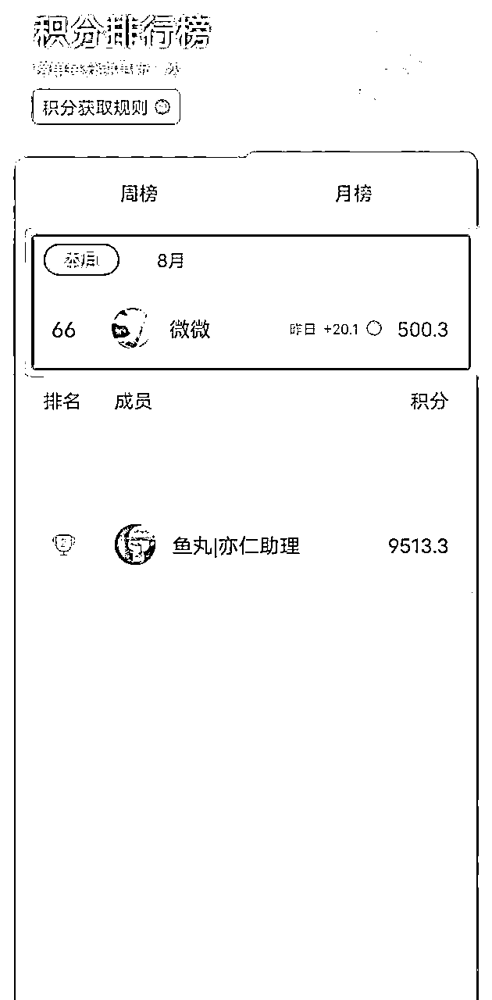
具体操作如下：
通过持续的日更分享，争取获得加精华的机会，或者留下钩子引人点赞、评论，混脸熟、刷印象，得到他人认可、被动链接以后，再给予高价值的见面礼，进一步加强信任感，提高产品的成交率。
这是我无意间发现的“项目”，那是在5月份的时候，看到有小伙伴在生财朋友圈分享他在星球里的积分排名，我就到各个星球搜了一下，第一印象是没什么特别的地方。
但是在第二天发文的时候，我顺便再去看了一下排行榜，发现名次的变动非常明显，特别是10-50名之间，我忽然意识到，这或许不是偶然。
在接下来的一周时间里，我通过点赞、评论、发小短文的形式尽量让自己的排名往前靠，这个时段分享的内容其实更多地是口水话，并没有太大的“利他”价值，可是当我的排名上升到50名以内之后：
竟然开始有人链接我了！而且他是排名第61位的小伙伴。添加他之后，通过他朋友圈的内容和对话，我才明白到，原来这个排行榜也是有人在刻意关注的。
他们都会想尽力让自己的排名靠前，让更多人看到，特别是前10名的名字，每次打开都能看到，无论是新手小白，还是有经验的前辈高手，甚至是大佬，在多次看到这个突然出现的新名字时，都会抽空去搜一下这个人的帖子内容，这样就会引起：
曝光度大幅增加，内容质量好的话，会引起高质量的链接、互动、合作。
当我认识到这个层面的时候，因为还处于新手期的阶段，所以我很快感受到这是一个对新人“百利而无一害”的“项目”，比如：
1.我输出大量的内容，没有排上名次，或者即使排上名次也没有链接、朋友圈沉淀转化，但是我提升了思维、输出能力，把技能点的数值拉高升级。
2.我输出大量的内容，得到链接，而且拥有了一批同频、精准的好友，或者客户，更便于后期转化、成交。
综合最直接的好坏结果去看，在捋清思路后，咱得出来的结论是：值得做！
首先，想要在知识星球的积分排行榜位列前排，按照星球的规则是如下的方法，因为前期个人的私域用户粘度不高，所以我选择的是标注红框的方法：
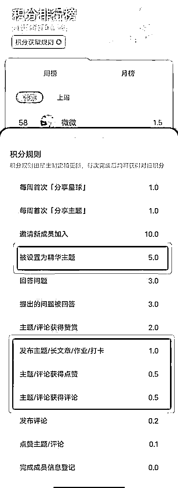
尽可能地发布具备高价值、利他、能够引起情绪共鸣或者带动积极上进心态的文章内容，争取获得点赞、评论、以及加精华的机会。
注：
但是一般情况下，每个知识星球的内容着力点并不一样，所以大部分人都在使用的“一文多用”的方法，顶多只能在星球混个一时的脸熟，并不适用于后续的变现。
这就需要你“对症下药”。找到每个星球的喜好、关注人数多、受欢迎程度高、主要推崇的内容，受到最多反馈的发布时间，从中分析文章的类型、内容的方向：
以此为出发点进行持续输出、分享。
话虽如此，就算是每一天都坚持阅读、分析星球内的文章，基于多个星球的情况下，时间成本也会显得很高。甚至一两个月都无法动笔输出。
在这里微微给你分享一个“小窍门”：
着重阅读近一个月的精华帖、以及这一个月里互动率、点赞率最高的10篇帖子，还有发布时间这三点，是最快最容易锁定目前这个星球受欢迎的内容的方法。
在此基础上，把对应以上要求的帖子都找出来后，再使用“速读”的方法去逐一拆解出它们的重点，也就是先只读每一章节开头最初的5行和结尾最后的5行，即“黄金5行法则”。
这样的阅读方式都不会让你错失内容、或者理解错误，因为大脑有查漏补缺的功能，比如在读到“A→C”这样的字幕序列时，你的大脑就会自动推断中间的内容“是B”。
而且大部分情况下，中间的内容很多时候都是举例的具体事例，核心内容一般都会在开头和结尾有所提到，所以，某些相关重要的知识点部分，着重抓住重点引入的内容部分和收尾的核心即可，中间的内容适当扫过即可。
要记住自己的本意是了解，并非深入学习。
PS：如果开头、结尾各读5行后，发现这个知识点比较难理解，且贯穿文章中心，比较重要的话，再返回开头认真把那部分的内容顺读几遍即可。
这里值得一提的是，并非所有知识星球都值得去研究它的调性、并在这里做长期的内容分享，最好是选择需要付费才能进入的星球。
为什么呢？
因为“付费”这道门槛，相当于已经为你筛选出一批精准同频的用户了。仔细想想，如果都不用钱就能进入的地方，大多数鱼龙混杂、素质参差不齐，且泛粉居多，转化起来比较费时、费力。
而付费的知识星球，都是有意愿深入学习、提升自己、在知识付费路上前行的群体，不仅能够成为目标用户，而且也是日后同频共进、能够有效交流沟通的小伙伴。
注：
如果自身暂时没有取得比较亮眼的成绩，那么就没必要选择门槛较高的知识星球，内里的用户群体大部分比你高段位的话，是没办法输出太多对他们有效的价值帮助的。
而且支出成本过高，也不利于后期的回报效益，无法确定一个持平或者稳定的收益，那就要根据个人能力水平去对标适合的星球。
当然除了知识星球以外，低客单价的社群也可以成为你的目标平台，比如坚持分享感悟、分享对群内有益的知识、观点，积极解答群内小伙伴的疑问，也会起到一个引人关注的效果，继而有被动链接这一步的诞生。
做好前期工作以后，接下来就是整个过程最重要的环节：写作。
俗话说得好，纸上得来终觉浅。尽管脑海里有了对应各个星球内容的想法，如果不能够逻辑有序地写出内容的价值、利他的知识点，那也是纸上谈兵。
所以写作始终是自媒体最强的“装备”之一，一定得学起来、用起来。
初期阶段，在我们还没有形成明显的个人风格之前，其实输出的内容不一定要非常书面化，但一定要让用户看得懂、文章条理清晰、逻辑有序。
一般采用“总-分-总”的结构都比较适用于输出干货文、价值文、实操案例等。
如果现阶段还是完全没有头绪、没有写作思维、没有写作经验的话，可以试试咱给你分享的这两个方法哈：
不用管逻辑顺序，以“日常交流”形式的口水话为基础，直接把脑海里想到的东西全部写下来，包括知识点、一闪而过的灵感、操作方法等等。
你可以语句不通顺，也可以前言不搭后语，但是一定要记得写下来，无论字数多少，想到什么就写什么，直到自己完全把这方面的内容完全写下来了。
在此之后，把所有写下来的内容进行删减、整理，比如重复的语句、不必要的用词用句、以及与知识点不太相关的关键词。
而在整理的过程中，不要抱有“完美”的心态，时刻记住是要留住核心内容，而不是拼凑字数。
其实方法也很简单，只要你尽量多读几遍，把语句不通顺的地方，前言不搭后语的句子调换一下，一篇具有逻辑、通俗易懂的白话文也就算是形成了。
PS：这只是在教你怎么练习、提升写作技巧，不要想着以此为捷径写文章，要不然你后期很难创作长篇文章的，毕竟不靠外界素材，只靠内部过滤，也是无法引起持续性的共鸣。
这个是我比较常用的方法。
在选题完成后，首先把文章的大纲、框架列出来，之后起一个粗糙的标题，再把脑海里想写的内容以分段1、2、3、4...的形式摊开，并在每一个分段起一个小标题，同时在每段写下重点要说的内容。
其次，紧扣标题这个核心，围绕小标题去摘抄大量的重点相关语句，结合标题尝试散发一些与重点语句相关联的关键词，然后依据关键词逐步增加内容，慢慢将整篇文章呈现出来。
最后，再针对这些内容是否符合主题、符合素材的中心意思进行改稿。
那么得知了知识星球需要的精华帖的调性，学会了怎么开始搭建起一篇文章的基础框架之后，接下来就是知识点/素材的填充了。
这是许多小伙伴的一个卡点，不知道怎么找素材，或者不知道怎么修改素材、怎么使用素材、怎么让素材合理运用到文章里。
微微之前在生财有术里写过的一篇文章，相信能给到你所要的答案：《写作秘诀，学会自制源源不断的素材》
不过，还有一种最轻易获得素材的方法，只不过需要你多花些时间去学习、去研究、去消化、去练习，也就是从书本上、其他星球上、社群里搜索相关的内容。
特别是在生财有术里，信息量之大，知识点之丰富，内容之海量，你几乎可以在这里找到自媒体行业的任何素材、指引方向。
而当你阅读了足够多的帖子之后，其实你会发现内容之间有一个共通点：它们之间的很多知识内容是能够联系起来的，或者是重复的。
有些时候，你甚至可以在一本书上找到很多文章内容的原句出处。
如果自己的思维能力不过关，那最好还是在找到一个知识点后，寻找与它相关联、有着类似特质的帖子内容去进行思维过滤、去消化之后进行二次加工输出。
注：
即使在其他星球或者社群找到了相关内容，也不能照搬照抄，这样的方式不仅侵害他人的权益，而且也会对自身的口碑、未来的发展造成不可估量的负面影响。
从中深入学习，以自己的理解去输出内容，不仅可以增加个人的知识储备，而且也能在持续分享中形成自己的个人风格，逐步打造起个人IP的印象。
在知识星球分享内容，其实可以结合“朋友圈运营”的打法，具体可以看航海手册：《IP朋友圈运营航海手册》
如果一直以分享干货的方向出发，其实不利于我们吸引同频人的靠近，就像是手册中提到的：要建立一个真实、有血有肉的人设。
因为我们以上做的行动，并不是单纯地分享干货，始终还是为了可以变现，所以对用户一定要有“增强粘性”这一环。具体的流程应该是这样的：
确定受众群体→找到他们对知识的刚需→从中学习这方面的内容→自身专业程度达到及格分（60）→
输出带有利他性质的内容→展现自己贴近他们的一面→提升信任感、安全感→成功被动链接→朋友圈内容转化→成交用户。
输出的最终的目的地还是私域的成交。因此要达到变现的结果，模仿朋友圈运营是必修课，知识星球本就是一个干货丰富的平台，想要留下用户并不能只依赖于“专业分享”。
那怎么通过文章去塑造一个真实的人设形象呢？
先不论前期怎么去做到60分，咱继续围绕以上重点开始：展现自己贴近他们的一面。
从心理学上的角度而言，信任感、安全感来自于基础的人际交流、需求得到满足、良好的服务态度，即：你不该仅仅是一位导师，更要是一位倾听者、参与者。
仔细想想，一位是道听途说非常有名的老师，另一位是你接触一段时间，而且挺靠谱而人不错的老师，你更愿意去选择哪一个老师为你教学呢？
因此，在分享专业的内容之余，一定要懂得与用户搭建起“沟通的联系”，当他们驻足在你文章内容跟前之余，利用互动的方法去进一步转化到私域。
在文末或者评论区留下钩子是一个不错的方法，但是要记住此“钩子”非彼“钩子”：
专业的分享能够吸引到精准的用户，同时也会冒出许多关于知识点的不理解、疑问、想法，这时候从个人角度去挑起共鸣，就能较为容易地引起评论区的互动。
比如：
1.我也是一个新人，刚刚入门，欢迎围观朋友圈；
2.一起努力一起加油，一起学习一起逆袭；
3.在文中多次提及你的受众群体可以怎么操作、参考、复制，比如微微的受众对象就是新手小白；
4.自己是怎么从0到1的，强调真实性；
5.用心回答每一个评论区里的提问。
这样的“钩子”形式既显得真诚而又不带任何营销性质，能够更贴切地让读者感受到作者的真实、用心形象，能够在交流中得到问题解答，情绪价值也提供到位：
一般情况下，在一个月左右的时间，基本上转化率都在40%左右（非常高）。微微试过一篇点赞80+的文章，被动链接40+精准小伙伴，之后在私域成交人数80%。
（注：不要留VX或者刻意引导他们关注，未经星主许可就这样操作的话，是一种非常不礼貌的行为，详情也可以学习一下咱之前在生财有术写的这一篇内容：《自媒体入门必修课，社交礼仪！》）
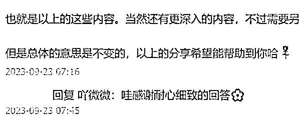
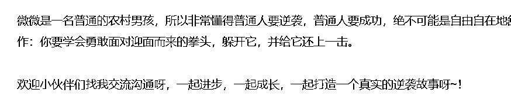
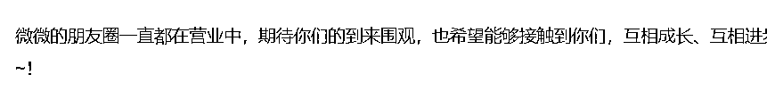
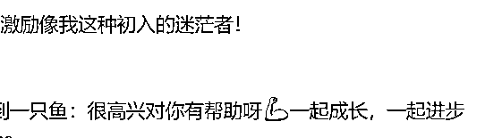
这是一个有点“小心机”的方法：
无论是哪一个知识星球，只要坚持日更输出（节假日可休息，因为也没多少人刷帖子），差不多一个月的时间，基本上你的“脸庞”在这个星球都不会再是“路人脸”。
这时候开始把朋友圈运营中的“日常”板块融合进来，就能够非常自在地消除与用户之间的距离感，显得非常亲近与平民化，即：不要妄自菲薄，大家都是普通人，都能够获得这样的成绩。
利用在线人数最多的时间，去点赞、评论一直都有关注自己文章内容的小伙伴的内容，与其进一步建立更深一层的联系。（在线人数可以通过第一点的研究调性中估算出来）
同时在日常发布长文后，开始夹杂着日常感悟、个人成绩、成交产品的心得，在第二个月形成鲜明的人设，也就是专业＋成绩+产品+日常=成交的前提/被动链接。
（三个月以来，已经被动链接近200人）
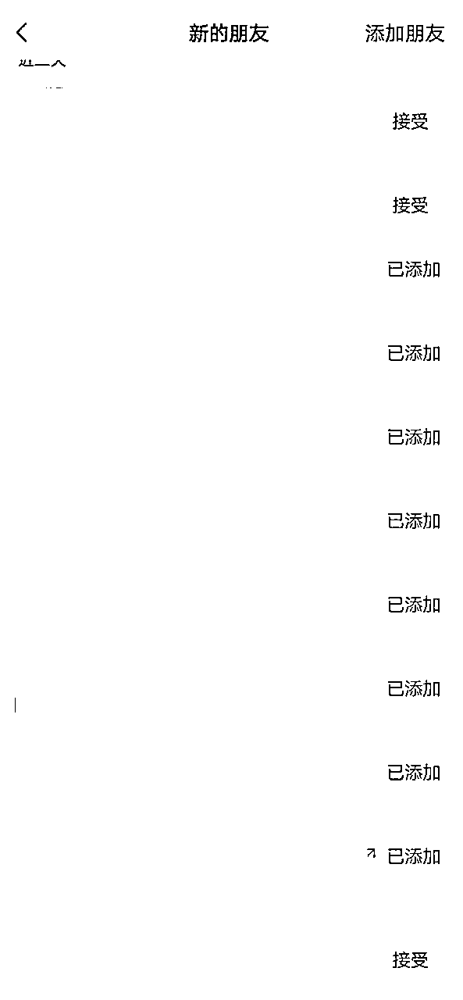
经过了两个月的过滤，你的知识储备、写作能力、逻辑思维等方面一定会有大幅度的提升，而且也会沉淀出一批精准的种子用户。
他们基本上都是因为你的内容而来，而且也对你有了充足的信任，同时大部分的个人能力、认知程度并不会比你高出许多。
这时候只要从他们的痛点需求入手，便能很大程度获得成交的结果，具体可以在被动链接后这么操作：
当用户来到你的私域后，不要着急进行营销自己的产品，个别用户会因为这样类似“割韭菜”的行为从而互删、或者礼貌拒绝，之后不再联系。
心怀感恩、保持真诚才能做到用户持续的复购。
正确的做法是针对不同星球过来的用户，准备单独一套的见面礼资料，比如因为写作而来，那就赠送《新手小白写作闭坑指南》，因为认知而来，那就赠送《从0到1，正确的成长认知模式》。
抓住每个用户的痛点，给予他们在星球以外的进一步刺激，看似简单的动作，但是却能激起对方心理的“回报效应”，也就是《影响力》一书中所说的“互惠原理”：我们应该尽量以类似的方式报答他人为我们所做的一切。
在知识星球慕名而来，类似于来你家做客，不用带礼物来，还能拿赠品回去：信任感＋互惠原理的共同作用下，会让对方始终有一种“需要回报”的印象。
其实把以上的工作都做好以后，用户已经对你建立了较为信任的关系，这时候通过朋友圈的产品营销，就能非常高效率地实现“自动化成交”。
文案相对而言也非常简单：只要针对于用户平时在知识星球内的提问、私信中存在的难点、卡点进行编辑，就能再一次吸引用户留意你的内容。
内容中刚好还是受众群体的痛点，出于对你的信任以及迫切的需求，那成交也就是水到渠成。
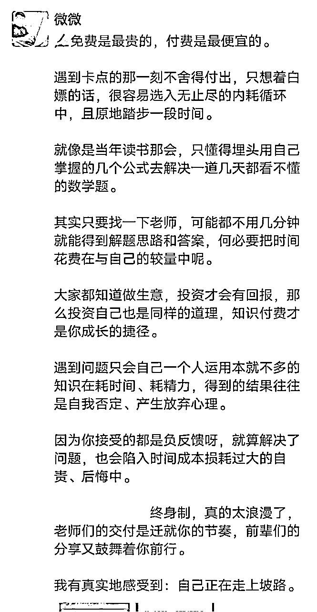
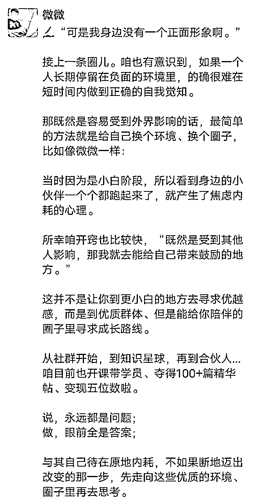
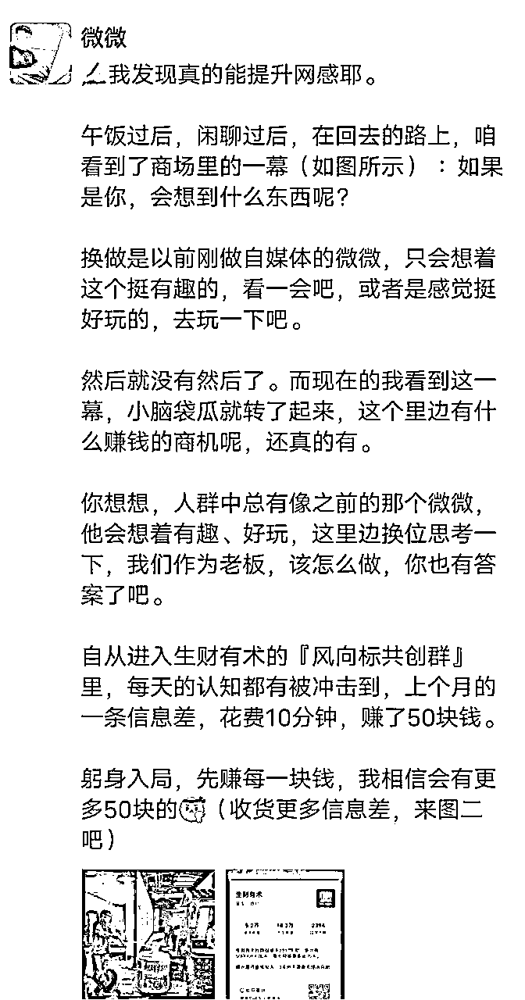
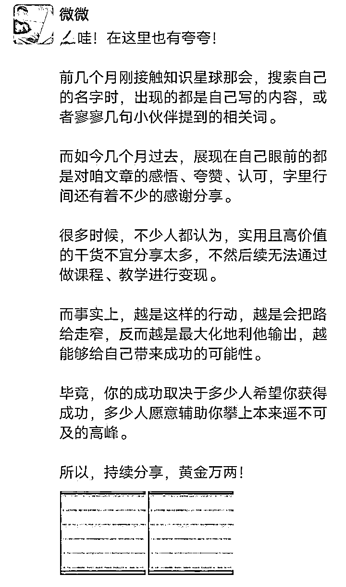
虽然这个项目沉淀了近三个月的时间才赚到了8000+，但是对于新人而言，我觉得非常值得。
我们经常能看见生财有术里边的案例，基本上最普通的也是“月入五位数”、“一个项目五位数”的水平，所以萌新们第一时间都会产生焦虑而不是激动，没有尝试的勇气和决心：
因为一点经验都没有，试错更怕损失时间成本。
所以微微看中的这个“项目”，绝对值得一试，它属于你怎么失败也不会有过大损失的类型，比如说：
三个月了，什么钱也没赚到，但是你坚持输出了三个月的内容，你的知识储备、写作能力、素材库、认知水平、思维逻辑等方面都有了非常大的提升；
三个月了，只有少部分人链接，赚的钱也很少，但是你已经通过互联网/自媒体赚到了第一块钱，学会了亦仁老师说的：躬身入局、把手弄脏。
三个月了，足够你锻炼心性，打好耐心，做好长期努力准备的基础了。
记住这句话：
没有不赚钱的项目，只有不赚钱的人。